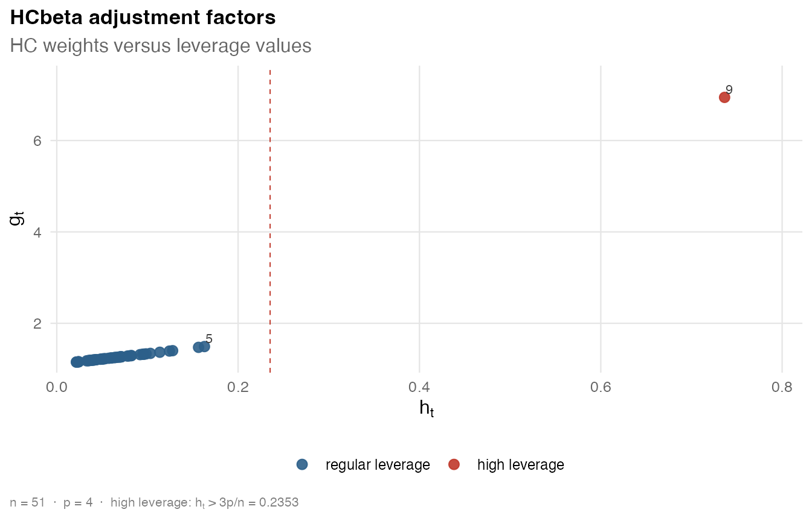

This vignette shows how to run HCbeta on the Crime2009
dataset, the 2009 U.S. crime application from the HCbeta paper, which
regresses the murder rate on high-school graduation, poverty, and
single-parent household rates. It inspects HCbeta’s method parameters
and diagnostic quantities, and runs a small sensitivity check on its
tuning controls. It assumes the introduction
(vignette("introduction", package = "hcinfer")).
Run HCbeta
Fit an OLS model and request HCbeta explicitly. This is equivalent to
the default hcinfer(fit) call.
library(hcinfer)
fit <- lm(murder ~ hs_grad + poverty + single, data = Crime2009)
result <- hcinfer(fit, type = "hcbeta")
summary(result)
#>
#> ── HCbeta robust inference summary ─────────────────────────────────────────────
#>
#> ── Model ──
#>
#> Formula: `murder ~ hs_grad + poverty + single`
#> Observations: 51 | Parameters: 4 | Residual df: 47
#>
#> ── Robust covariance ──
#>
#> Estimator: HCbeta
#> Confidence level: 95.0% | Normal critical value: 1.9600
#> Tests are two-sided normal Wald tests, one coefficient at a time.
#> Test results use alpha = 0.050.
#>
#> ── Leverage diagnostics ──
#>
#> # A tibble: 6 × 2
#> statistic value
#> <chr> <chr>
#> 1 minimum 0.02162
#> 2 q1 0.04061
#> 3 median 0.0603
#> 4 mean 0.07843
#> 5 q3 0.08221
#> 6 maximum 0.7365
#> Maximum leverage: observation 9 (index 9), value 0.7365
#> Average leverage: 0.0784
#> Concentration: 9.39 x average leverage
#>
#> ── Robust weights ──
#>
#> # A tibble: 6 × 2
#> statistic value
#> <chr> <chr>
#> 1 minimum 1.151
#> 2 q1 1.197
#> 3 median 1.242
#> 4 mean 1.366
#> 5 q3 1.292
#> 6 maximum 6.944
#> Maximum weight: observation 9 (index 9), value 6.9442
#> Median weight: 1.2419
#> Concentration: 5.59 x median weight
#>
#> ── Method parameters ──
#>
#> # A tibble: 14 × 3
#> parameter value role
#> <chr> <chr> <chr>
#> 1 c1 7 method constant
#> 2 c2 0.75 method constant
#> 3 lower 0.01 method constant
#> 4 upper 0.99 method constant
#> 5 a_max 1e+04 method constant
#> 6 b_max 1e+04 method constant
#> 7 mu_hat 0.9216 estimated quantity
#> 8 s2_w 0.009906 estimated quantity
#> 9 phi_hat 6.297 estimated quantity
#> 10 a_hat 5.803 estimated quantity
#> 11 b_hat 0.4939 estimated quantity
#> 12 zeta 0.505 estimated quantity
#> 13 a_tilde 3.425 estimated quantity
#> 14 b_tilde 0.7444 estimated quantity
#>
#> ── Coefficient tests ──
#>
#> # A tibble: 4 × 9
#> term estimate robust_se z p_value alpha test_result
#> <chr> <chr> <chr> <chr> <chr> <chr> <chr>
#> 1 (Intercept) -40.65 25.39 -1.601 0.109 0.050 do not reject H0
#> 2 hs_grad 0.2755 0.2253 1.223 0.222 0.050 do not reject H0
#> 3 poverty 0.353 0.1589 2.222 0.026 0.050 reject H0
#> 4 single 0.6642 0.19 3.495 <0.001 0.050 reject H0
#> ci ci_relation
#> <chr> <chr>
#> 1 [-90.42, 9.115] includes null
#> 2 [-0.1662, 0.7171] includes null
#> 3 [0.04157, 0.6645] excludes null
#> 4 [0.2917, 1.037] excludes null
#>
#> ── Confidence intervals ──
#>
#> # A tibble: 4 × 4
#> term null_value interval interpretation
#> <chr> <chr> <chr> <chr>
#> 1 (Intercept) 0 [-90.42, 9.115] includes null
#> 2 hs_grad 0 [-0.1662, 0.7171] includes null
#> 3 poverty 0 [0.04157, 0.6645] excludes null
#> 4 single 0 [0.2917, 1.037] excludes null
#> test_result is based on p_value < alpha. Do not reject H0 does not mean that H0
#> is true.Inspect HCbeta parameters
HCbeta stores its six user-facing controls and eight estimated
quantities in method_params. The adjustable controls are
c1, c2, lower,
upper, a_max, and b_max. The
remaining entries are computed from the fitted design by method of
moments and shrinkage.
result$method_params
#> $c1
#> [1] 7
#>
#> $c2
#> [1] 0.75
#>
#> $lower
#> [1] 0.01
#>
#> $upper
#> [1] 0.99
#>
#> $a_max
#> [1] 10000
#>
#> $b_max
#> [1] 10000
#>
#> $mu_hat
#> [1] 0.9215686
#>
#> $s2_w
#> [1] 0.009905943
#>
#> $phi_hat
#> [1] 6.296619
#>
#> $a_hat
#> [1] 5.802766
#>
#> $b_hat
#> [1] 0.4938524
#>
#> $zeta
#> [1] 0.5049505
#>
#> $a_tilde
#> [1] 3.425159
#>
#> $b_tilde
#> [1] 0.7444205The table below maps every printed name to its role and, where applicable, to the corresponding mathematical symbol.
| Entry | Symbol | Meaning |
|---|---|---|
c1 |
c_1 | Exponent constant (default 7) |
c2 |
c_2 | Exponent decay rate (default 0.75) |
lower |
Lower truncation limit for w_t (default 0.01) | |
upper |
Upper truncation limit for w_t (default 0.99) | |
a_max |
A_{\max} | Upper cap for \tilde a (default 10000, valid range [50,\;25000]) |
b_max |
B_{\max} | Upper cap for \tilde b (default 10000, valid range [50,\;25000]) |
mu_hat |
\hat\mu | Mean of the truncated leverage complements w_t |
s2_w |
s_w^2 | Variance of w_t |
phi_hat |
\hat\phi | Estimated dispersion |
a_hat |
\hat a | Raw moment shape for the Beta family |
b_hat |
\hat b | Raw moment shape for the Beta family |
zeta |
\zeta | Shrinkage weight toward a = b = 1 |
a_tilde |
\tilde a | Adjusted shape after shrinkage and floor |
b_tilde |
\tilde b | Adjusted shape after shrinkage and floor |
A fixed shape floor \varepsilon =
0.01 is applied via \max(\cdot,\;\varepsilon) after shrinkage and
before the \min(\cdot,\;A_{\max}) caps.
It is part of the HCbeta definition, not a user argument, and is not
accepted through .... It is distinct from
lower, which truncates the leverage complements w_t before the Beta CDF is evaluated.
Inspect leverage and weights
HCbeta, like the other estimators, stores leverage values and robust weights. This table shows the observations with the largest leverages.
diagnostics <- data.frame(
state = Crime2009$state[as.integer(result$observation)],
leverage = unname(result$leverage),
weight = unname(result$weights),
residual = unname(result$residuals)
)
head(diagnostics[order(-diagnostics$leverage), ], 5)
#> state leverage weight residual
#> 9 District of Columbia 0.7365246 6.944205 2.48177695
#> 5 California 0.1628906 1.490903 0.37175507
#> 25 Mississippi 0.1563654 1.473719 -4.11250663
#> 27 Montana 0.1277709 1.401047 0.02550751
#> 44 Texas 0.1242825 1.392448 -0.36169694You can also sort by robust weight to see which observations contribute most to the variance estimate.
head(diagnostics[order(-diagnostics$weight), ], 5)
#> state leverage weight residual
#> 9 District of Columbia 0.7365246 6.944205 2.48177695
#> 5 California 0.1628906 1.490903 0.37175507
#> 25 Mississippi 0.1563654 1.473719 -4.11250663
#> 27 Montana 0.1277709 1.401047 0.02550751
#> 44 Texas 0.1242825 1.392448 -0.36169694The covariance object can be plotted directly to display adjustment factors against leverages.

Run a sensitivity check
All six adjustable HCbeta controls can be passed through
.... The sensitivity check below compares the default
result with a small set of alternative settings, each varying only
declared controls so that the interpretation remains tied to HCbeta. For
every setting it reports the robust standard error, p-value, and
confidence interval for the focus coefficient single,
together with the largest adjustment factor.
settings <- list(
default = list(),
stronger_exponent = list(c1 = 10),
faster_decay = list(c2 = 1.0),
tighter_truncation = list(lower = 0.05, upper = 0.90),
capped_shapes = list(a_max = 50, b_max = 50)
)
sensitivity <- lapply(names(settings), function(setting) {
res <- do.call(hcinfer, c(list(fit, type = "hcbeta"), settings[[setting]]))
row <- tests(res, parm = "single")
ci <- confint(res, parm = "single")
data.frame(
setting = setting,
std_error = row$std_error,
p_value = row$p_value,
conf_low = ci$conf_low,
conf_high = ci$conf_high,
max_weight = max(res$weights)
)
})
sensitivity <- do.call(rbind, sensitivity)
sensitivity
#> setting std_error p_value conf_low conf_high max_weight
#> 1 default 0.1900290 4.737318e-04 0.2917367 1.0366368 6.944205
#> 2 stronger_exponent 0.2789529 1.726573e-02 0.1174491 1.2109244 15.385636
#> 3 faster_decay 0.1115023 2.573687e-09 0.4456462 0.8827272 2.173383
#> 4 tighter_truncation 0.2829160 1.889245e-02 0.1096816 1.2186919 15.860502
#> 5 capped_shapes 0.1900290 4.737318e-04 0.2917367 1.0366368 6.944205In this model the exponent constants c1 and
c2 and the truncation window drive the HCbeta correction:
raising c1 to 10 pushes the robust SE upward, while
increasing c2 to 1.0 pulls it downward. Tightening the
truncation bounds to [0.05,\;0.90] also
changes the result by restricting the range of leverage complements fed
to the Beta CDF. In contrast, the shape caps a_max and
b_max do not change the output when set to their minimum
admissible value of 50, because the adjusted shapes \tilde a \approx 3.4 and \tilde b \approx
0.7 sit far below that floor. This illustrates a practical
guardrail: when the design lacks extreme leverage complements, the caps
remain inactive and the inference is driven primarily by the exponent
and truncation settings.